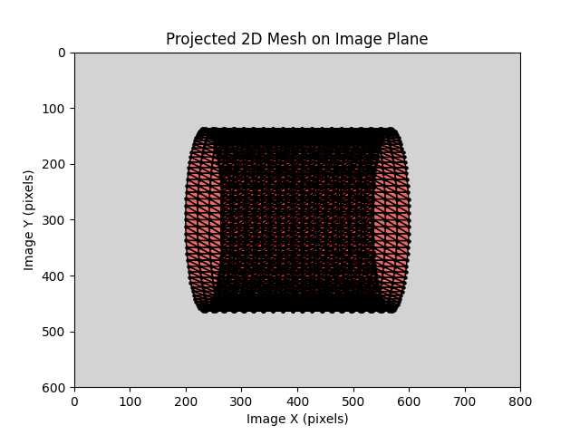

Note
Go to the end to download the full example code.
Project a Mesh on a Camera and obtains the corresponding pixel coordinates (and jacobians of the projection)#
This example demonstrates how to project a mesh on a camera and compute the corresponding gray levels values and XYZ jacobian
using the pysdic library.
See also
pysdic.Mesh()- Official documentation for the Mesh class.pysdic.Camera()- Official documentation for the Camera class.
Define a cylinder Mesh#
We will create a simple cylindrical mesh located at the origin and oriented along the z-axis. The cylinder will have a radius of 1 and a height of 2, with its center at the origin.
import numpy
import pysdic
import py3dframe
# Create the frame associated with the mesh (identity frame at the origin)
mesh_frame = py3dframe.Frame.from_axes(
origin=[0.0, 0.0, 0.0],
x_axis=[1.0, 0.0, 0.0],
y_axis=[0.0, 1.0, 0.0],
z_axis=[0.0, 0.0, 1.0]
)
# Create the cylindrical mesh
radius = 1.0
nt = 100 # Number of points along the circumference
nh = 20 # Number of points along the height
cylinder_mesh = pysdic.create_triangle_3_axisymmetric(
profile_curve = lambda h: radius,
frame=mesh_frame,
height_bounds=(-1.0, 1.0),
n_height=nh,
n_theta=nt,
closed=True
)
Define a Camera#
We will create a camera located at (0, -5, 0) and looking towards the origin with a focal length of 800 pixels and an image size of (800, 600) pixels.
See the package pycvcam for more details on how to create and manipulate cameras in Python for pysidc.
For this example, we will consider a camera with an intrinsic and extrisnic model CV2-like but a distortion model more complex to show the flexibility of the library.
import pycvcam
intrinsic = pycvcam.Cv2Intrinsic.from_matrix(
numpy.array([[800.0, 0.0, 400.0],
[0.0, 800.0, 300.0],
[0.0, 0.0, 1.0]])
)
camera_frame = py3dframe.Frame.from_axes(
origin=[0.0, -5.0, 0.0],
x_axis=[0.0, 0.0, 1.0],
y_axis=[1.0, 0.0, 0.0],
z_axis=[0.0, 1.0, 0.0]
)
extrinsic = pycvcam.Cv2Extrinsic.from_frame(camera_frame)
parameters_in_pixels = numpy.array([0.1, 0.2, 0.3, 0.4, 0.5, 0.6]) # Example distortion parameters
parameters = parameters_in_pixels / 800.0 # Normalize by focal length
distortion = pycvcam.ZernikeDistortion(parameters=parameters) # Zernike Order 1
camera = pysdic.Camera(
sensor_height=600,
sensor_width=800,
intrinsic=intrinsic,
extrinsic=extrinsic,
distortion=distortion
)
Project the Mesh on the Camera#
Project the mesh on the camera using the project_points method of the Camera class to obtain the pixel coordinates of the projected points and the jacobian of the projection with respect to the camera parameters and the XYZ coordinates of the points.
dx: boolean, whether to compute the jacobian with respect to the XYZ coordinates of the points.
dintrinsic: boolean, whether to compute the jacobian with respect to the intrinsic parameters of the camera.
dextrinsic: boolean, whether to compute the jacobian with respect to the extrinsic parameters of the camera.
ddistortion: boolean, whether to compute the jacobian with respect to the distortion parameters of the camera.
The output will be a pysdic.ProjectionResult object containing the projected pixel coordinates and the jacobians.
projection_result = camera.project_points(cylinder_mesh.vertices, dx=True, dintrinsic=True, dextrinsic=True, ddistortion=True)
image_points = projection_result.image_points # The projected 2D image points of shape (N_vertices, 2)
jacobian_dx = projection_result.jacobian_dx # The jacobian with respect to the world points of shape (N_vertices, 2, 3)
jacobian_dintrinsic = projection_result.jacobian_dintrinsic # The jacobian with respect to the intrinsic parameters of shape (N_vertices, 2, N_intrinsic_parameters)
jacobian_dextrinsic = projection_result.jacobian_dextrinsic # The jacobian with respect to the extrinsic parameters of shape (N_vertices, 2, N_extrinsic_parameters)
jacobian_ddistortion = projection_result.jacobian_ddistortion # The jacobian with respect to the distortion parameters of shape (N_vertices, 2, N_distortion_parameters)
print(f"Projected image points shape: {image_points.shape}")
print(f"Jacobian with respect to XYZ coordinates shape: {jacobian_dx.shape}")
print(f"Jacobian with respect to intrinsic parameters shape: {jacobian_dintrinsic.shape}")
print(f"Jacobian with respect to extrinsic parameters shape: {jacobian_dextrinsic.shape}")
print(f"Jacobian with respect to distortion parameters shape: {jacobian_ddistortion.shape}")
visible_mask = numpy.isfinite(image_points).all(axis=1) # Mask of the points that are visible in the camera (not projected to infinity due to distortion or being behind the camera)
print(f"Number of visible points: {visible_mask.sum()} out of {cylinder_mesh.vertices.n_points}")
pixel_coordinates = camera.image_points_to_pixel_points(image_points) # Convert the projected image points to pixel coordinates (switch from (x, y) to (row, column))
Projected image points shape: (2000, 2)
Jacobian with respect to XYZ coordinates shape: (2000, 2, 3)
Jacobian with respect to intrinsic parameters shape: (2000, 2, 4)
Jacobian with respect to extrinsic parameters shape: (2000, 2, 6)
Jacobian with respect to distortion parameters shape: (2000, 2, 6)
Number of visible points: 2000 out of 2000
Display the projected points on the image plane#
camera.visualize_projected_mesh(
mesh=cylinder_mesh,
)

Total running time of the script: (0 minutes 1.621 seconds)